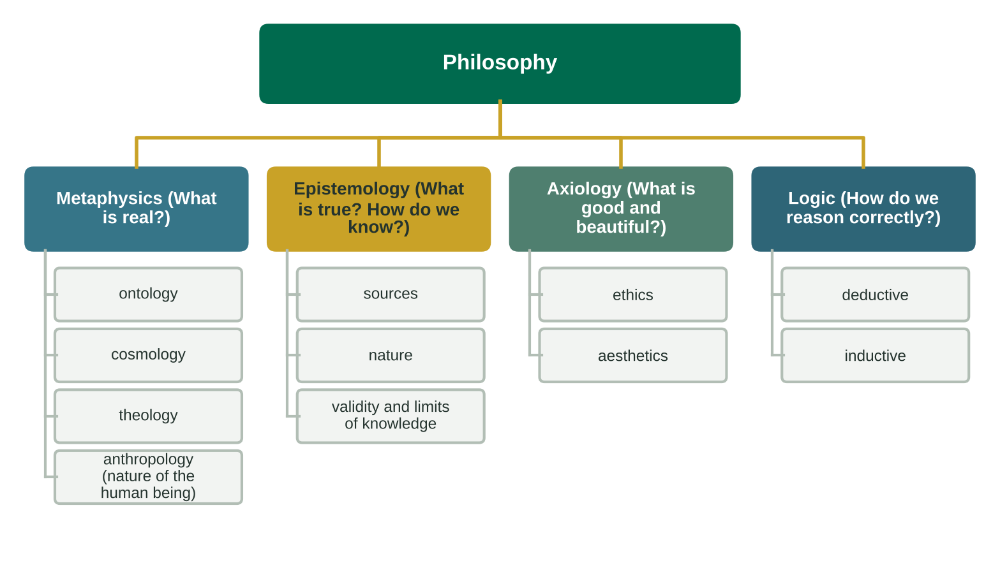
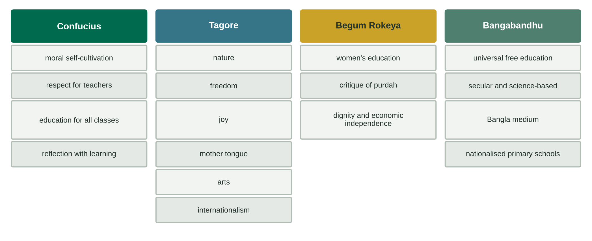

PC 115 Philosophical Foundation of Education
Metaphysics, epistemology, axiology, educational philosophies and great educational thinkers of West and East
Contents
- Unit 1: Basics of Philosophy and Philosophy of Education
- Unit 2: Major Philosophical Thought in Metaphysics and Epistemology
- Unit 3: Personal Philosophy of an Educator
- Unit 4: Implications of Philosophical Ideas in Education
- Unit 5: The Great Philosophers and Their Contribution to Education
- Reading List
- Exam Preparation Bank
- References
About this course
Every educational decision, from what goes into the curriculum to how a teacher treats a child, rests on assumptions about reality, knowledge and value. This course makes those assumptions visible. It introduces the branches of philosophy, the major metaphysical and epistemological doctrines and their educational implications, the main educational philosophies (perennialism, essentialism, progressivism, social reconstructionism, existentialism and humanism), the ethics of education, and the contributions of great philosophers from Socrates to Freire and Foucault, and from Confucius to Tagore, Begum Rokeya and Bangabandhu. It also guides you to write your own teaching philosophy, which interview panels frequently ask for.
Course objectives
Explain the meaning, functions and branches of philosophy and the relationship between philosophy and education.
Analyse metaphysical and epistemological doctrines and their implications for aims, curriculum, methods and the teacher's role.
Develop and reflect on a personal philosophy of teaching.
Evaluate the contributions of major Western and Eastern philosophers to education.
Each unit follows the official syllabus order. Read the narrative first, then the Key point boxes, then test yourself with the Exam focus questions.
Golden boxes = must-remember ideas. Teal boxes = definitions and study tips. Green boxes = Bangladesh context.
The final chapter is a question bank (MCQs with answers, short and broad questions) in the style of university examinations, followed by full references in APA 7th style.
Statistics on enrolment, budgets and policies change every year. Before an exam, check the latest BANBEIS, DPE, UGC and UNESCO figures.
Unit 1: Basics of Philosophy and Philosophy of Education
Chapter summary
Philosophy comes from the Greek philos (love) and sophia (wisdom): the love of wisdom . It is the critical, systematic and rational inquiry into the most fundamental questions about reality, knowledge, value, reason, mind and language.
This chapter covers: Meaning and definition of philosophy; Functions of philosophy; Branches of philosophy; Areas of application of philosophy; Scope and necessity of the philosophy of education.
Key points to remember:
- Dewey's formula is the classic answer to "Philosophy as the foundation of education": philosophy and education are two sides of the same coin; philosophy is the contemplative side and education the active side.
What the curriculum saysUnit 1: Basics of Philosophy and Philosophy of Education · 3 contact hours
At the end of this unit learners will be able to
- explain the functions of Philosophy
- discuss the functions of branches and areas of application of Philosophy
- explain the rationale for studying Philosophy of Education
- Meaning, definition, functions of philosophy
- Major branches of philosophy and their areas of inquiry
- Metaphysics
- Epistemology
- Axiology
- Areas of application of Philosophy: Philosophy of Science, Philosophy of Education, Philosophy of religion, Philosophy of mind, Philosophy of art, Philosophy of Politics
- Scope and necessity of studying Philosophy of Education: Philosophy as the foundation of education
1.1 Meaning and definition of philosophy
Philosophy comes from the Greek philos (love) and sophia (wisdom): the love of wisdom. It is the critical, systematic and rational inquiry into the most fundamental questions about reality, knowledge, value, reason, mind and language. In Bangla, darshan (দর্শন) means "seeing" or "vision", implying direct insight into truth.
Plato: "Philosophy is the science of the eternal nature of things."
Aristotle: philosophy is "the science which investigates the nature of being as it is in itself" (metaphysics as first philosophy).
Bertrand Russell: philosophy is "an unusually ingenious attempt to think fundamentally" and something "intermediate between theology and science" (History of Western Philosophy, 1945).
1.2 Functions of philosophy
Speculative (synoptic): builds a comprehensive view of reality and life.
Normative (prescriptive): sets standards of what ought to be, such as good, right and beautiful.
Analytic (critical): clarifies concepts and language, and exposes assumptions and contradictions (the dominant approach in 20th-century Anglo-American philosophy of education: Peters, Hirst, Scheffler).
Integrative: relates knowledge from different fields into a coherent whole.
1.3 Branches of philosophy

Figure 1. The main branches of philosophy and their questions
| Branch | Central question | Educational question it raises |
|---|---|---|
| Metaphysics | What is ultimately real? What is the nature of the human being? | What is the nature of the learner? What should be taught as most "real" or important? |
| Epistemology | What is knowledge? How do we know? Is knowledge certain? | How should we teach? What counts as valid knowledge? What is the role of experience, reason and authority? |
| Axiology (ethics and aesthetics) | What is valuable, right and beautiful? | What values should education promote? How should teachers act? What place do the arts have? |
| Logic | What is valid reasoning? | How should students learn to think critically? |
1.4 Areas of application of philosophy
Philosophy of science: the nature of scientific knowledge, method, explanation, theory change (Popper's falsification; Kuhn's paradigms).
Philosophy of education: aims, values, concepts and methods of education.
Philosophy of religion: the nature of God, faith, reason and religious experience.
Philosophy of mind: consciousness, the mind–body problem, mental states, artificial intelligence.
Philosophy of art (aesthetics): the nature of beauty, art and aesthetic experience.
Political philosophy: justice, rights, the state, liberty and democracy (Plato, Locke, Rawls).
1.5 Scope and necessity of the philosophy of education
Philosophy of education applies philosophical inquiry to educational aims, curriculum, methods, the teacher, the learner, discipline, evaluation and the relationship between education and society.
Why study it?
It clarifies aims and gives direction ("Education without philosophy is blind").
It reveals the assumptions behind policies and practices.
It guides the selection of curriculum and methods consistent with aims.
It develops critical and reflective teachers who can justify their decisions.
It helps to resolve value conflicts in plural societies.
It links education with national ideology and culture.
"Philosophy is the theory of education in its most general phases."
John Dewey, Democracy and Education (1916)
Dewey's formula is the classic answer to "Philosophy as the foundation of education": philosophy and education are two sides of the same coin; philosophy is the contemplative side and education the active side. Gentile put it as "Education without philosophy would mean a failure to understand the precise nature of education."

Figure 2. How philosophy shapes educational practice
Unit 2: Major Philosophical Thought in Metaphysics and Epistemology
Chapter summary
Kant's synthesis: "Thoughts without content are empty, intuitions without concepts are blind." Knowledge needs both experience and the mind's organising categories.
This chapter covers: Doctrines in metaphysics; Doctrines in epistemology; Summary table of metaphysical doctrines and education.
What the curriculum saysUnit 2: Understanding of Major Philosophical Thoughts in Metaphysics and Epistemology · 6 contact hours
At the end of this unit learners will be able to
- present beliefs of major philosophical thoughts or doctrines in Metaphysics and Epistemology
- establish relationship among different philosophical ideas and education
- apply these ideas in education
- Doctrines in Metaphysics: basic beliefs and educational implications
- Idealism
- Realism
- Materialism
- Naturalism
- Essentialism
- Existentialism
- Doctrines in Epistemology: basic beliefs and educational implications
- Empiricism
- Rationalism
- Constructivism/Constructionism
- Pragmatism
2.1 Doctrines in metaphysics
Idealism
Key thinkers: Plato, Descartes, Berkeley, Kant, Hegel, Froebel; in the East, Vedanta, Vivekananda and Tagore (partly).
Basic beliefs: ultimate reality is mind, spirit or ideas. The material world is an imperfect copy of eternal Forms (Plato's allegory of the cave). Truth, goodness and beauty are absolute and eternal. Human beings are essentially spiritual beings.
Educational implications:
Aims: self-realisation; character and moral development; the pursuit of truth, goodness and beauty; spiritual development.
Curriculum: humanities, literature, philosophy, history, religion and the arts; ideas over things.
Methods: lecture, dialogue (Socratic dialectic), discussion, imitation of models, reflection.
Teacher: the central figure, a moral and intellectual exemplar ("the gardener" of the child's spirit, in Froebel's image).
Discipline: self-discipline through respect for ideals.
Criticisms: neglects science, vocational skills and the child's interests; teacher-centred; values may be imposed.
Realism
Key thinkers: Aristotle, Aquinas (classical / religious realism), Comenius, Locke, Herbart, Bacon (natural / scientific realism), Russell and Whitehead (new realism).
Basic beliefs: reality exists independently of the mind; the external world of objects is real and knowable through the senses and reason; natural laws govern the universe.
Educational implications:
Aims: to understand the real world; to prepare for real life; to develop rational and practical abilities.
Curriculum: science, mathematics, social sciences, vocational subjects; organised, systematic knowledge.
Methods: observation, experiment, demonstration, field trips, inductive teaching; Comenius's Orbis Pictus (1658), the first illustrated textbook.
Teacher: a guide who presents objective knowledge clearly and systematically.
Criticisms: can be mechanistic; neglects the spiritual and imaginative; values reduced to facts.
Materialism
Key thinkers: Democritus, Epicurus, Hobbes; dialectical materialism of Marx and Engels.
Basic beliefs: only matter and its motions are real; mind and consciousness are products of matter. Marx's historical materialism holds that the economic base determines the social, political and cultural superstructure.
Educational implications: education is shaped by and serves the economic structure; polytechnic education combining mental and manual labour; science and technology; education for social equality and class consciousness. Critics note the neglect of spiritual and individual freedom.
Naturalism
Key thinkers: Rousseau (Émile, 1762), Herbert Spencer, Comte, and in a sense Tagore.
Basic beliefs: nature is the ultimate reality; there is no supernatural realm; the child is born good ("Everything is good as it leaves the hands of the Author of things; everything degenerates in the hands of man" – Rousseau); development follows natural laws.
Educational implications:
Aims: natural, free development of the child's innate powers; self-preservation; "complete living" (Spencer).
Curriculum: based on the child's interests and stage; nature study, physical activity, science.
Methods: learning by doing, experience, play, heuristic and discovery methods; negative education in early childhood (protecting the child from corrupting social influences rather than instructing).
Teacher: an observer and stage-setter who stays in the background.
Discipline: discipline by natural consequences (a child who breaks a window feels the cold).
Criticisms: romanticises the child; neglects society, culture and moral instruction; impractical in mass schooling.
Essentialism (as a metaphysical-cultural stance)
Key thinkers: William C. Bagley (1938), Arthur Bestor, later E. D. Hirsch.
Basic beliefs: there is a core of essential knowledge, skills and values that every educated person must master; these essentials come from the cultural heritage and are relatively stable.
Implications: a core curriculum (the 3Rs, sciences, history, languages); teacher-directed instruction; discipline and effort; standardised assessment. This is discussed further under educational philosophies (Unit 4).
Existentialism
Key thinkers: Kierkegaard (religious existentialism), Nietzsche, Heidegger, Sartre, Simone de Beauvoir, Camus, Martin Buber.
Basic beliefs: "Existence precedes essence" (Sartre): humans first exist and then define themselves through free choices. The individual is free and responsible, and faces anxiety, absurdity and the need for authenticity.
Educational implications:
Aims: the development of the authentic, free, responsible individual; self-awareness and personal meaning.
Curriculum: humanities, arts, literature, philosophy; subjects chosen by learners; exploration of the human condition (death, love, freedom).
Methods: Socratic dialogue, self-expression, individual projects, choice; the I–Thou relationship (Buber) between teacher and student.
Teacher: a facilitator who respects each learner's freedom and individuality. A. S. Neill's Summerhill School is often cited as an existentialist-influenced school.
Criticisms: too individualistic; neglects social needs and systematic knowledge; hard to implement in mass schooling.
2.2 Doctrines in epistemology
Empiricism
Key thinkers: John Locke, George Berkeley, David Hume, Francis Bacon.
Belief: all knowledge comes from sensory experience. The mind at birth is a *tabula rasa* (blank slate) (Locke, 1690).
Educational implications: sense training, observation, experiments, audio-visual aids, field trips; inductive methods; the importance of the learning environment.
Rationalism
Key thinkers: Plato, Descartes ("Cogito, ergo sum"), Spinoza, Leibniz.
Belief: reason is the primary source of knowledge; some knowledge is innate or a priori (independent of experience), as in mathematics and logic.
Educational implications: mathematics, logic and deductive reasoning; dialectic and debate; developing intellectual faculties.
Kant's synthesis: "Thoughts without content are empty, intuitions without concepts are blind." Knowledge needs both experience and the mind's organising categories.
Constructivism and constructionism
Key thinkers: Piaget (cognitive), Vygotsky (social), von Glasersfeld (radical), Papert (constructionism), Berger and Luckmann (social construction of reality).
Belief: knowledge is actively constructed by the knower through experience and social interaction, not passively received.
Educational implications: learner-centred, inquiry and project methods; collaboration; building on prior knowledge; assessment of understanding; constructionism stresses learning by making shareable artefacts.
Pragmatism
Key thinkers: C. S. Peirce, William James, John Dewey, W. H. Kilpatrick.
Belief: truth is what works; ideas are instruments for solving problems (instrumentalism); reality is changing; knowledge results from experience and experimentation; values are relative to consequences.
Educational implications:
Aims: growth; social efficiency; the reconstruction of experience; democratic living.
Curriculum: based on the child's interests and real-life problems; integrated and flexible.
Methods: learning by doing; the project method (Kilpatrick) and problem-solving method; experimentation.
Teacher: a guide and friend; the school as a miniature democratic society.
Discipline: social discipline through participation in purposeful activity.

Figure 3. Four epistemological positions on the source of knowledge
2.3 Summary table of metaphysical doctrines and education
| Doctrine | Reality | Aim | Curriculum | Method | Teacher |
|---|---|---|---|---|---|
| Idealism | Mind, ideas | Self-realisation, character | Humanities, religion | Lecture, dialogue | Model, central |
| Realism | Physical world | Understanding reality, life preparation | Sciences, mathematics | Observation, demonstration | Systematic instructor |
| Materialism | Matter | Productive, equal society | Science, technology, labour | Polytechnic, practical | Social worker |
| Naturalism | Nature | Free natural development | Child's interests, nature | Play, discovery, doing | Observer, stage-setter |
| Pragmatism | Changing experience | Growth, social efficiency | Integrated, problem-based | Project, problem solving | Guide, friend |
| Existentialism | Individual existence | Authenticity, freedom | Humanities, chosen subjects | Dialogue, self-expression | Facilitator |
Unit 3: Personal Philosophy of an Educator
Chapter summary
Every teacher holds a personal philosophy of education, whether explicit or not, and it shapes daily decisions: how to plan lessons, what to emphasise, how to respond to mistakes, how to discipline, how to assess and how to relate to learners. A teacher who believes knowledge is fixed and transmitted will lecture and test recall…
This chapter covers: Personal philosophy and educational decision-making; What makes a teaching philosophy?; Reflecting on one's educational beliefs.
What the curriculum saysUnit 3: Personal Philosophy of an Educator · 3 contact hours
At the end of this unit learners will be able to
- identify components of an educator’s personal philosophy of education
- explain relationships between an educator’s personal philosophy and his/her educational decision making
- reflect on one’s own practice and philosophy behind it
- Relationship between an educators personal philosophy and educational decision making
- What makes a teaching philosophy: Beliefs about teaching and learning; Beliefs about students, Beliefs about knowledge, Beliefs about what is worth knowing, personal beliefs in philosophical
- Reflecting on one’s self educational beliefs and their influence on his/her educational practice
3.1 Personal philosophy and educational decision-making
Every teacher holds a personal philosophy of education, whether explicit or not, and it shapes daily decisions: how to plan lessons, what to emphasise, how to respond to mistakes, how to discipline, how to assess and how to relate to learners. A teacher who believes knowledge is fixed and transmitted will lecture and test recall; one who believes knowledge is constructed will design inquiry and assess understanding. Making the philosophy explicit allows consistency, reflection and professional growth.

Figure 4. From beliefs to practice: the role of a personal teaching philosophy
3.2 What makes a teaching philosophy?
A teaching philosophy statement (Chism, 1998; Kaplan et al., 2007) typically addresses:
Beliefs about teaching and learning: how learning happens and what the teacher's role is.
Beliefs about students: their nature, potential, diversity and needs.
Beliefs about knowledge: whether it is fixed or constructed, and certain or provisional.
Beliefs about what is worth knowing: which knowledge, skills and values should be prioritised.
Personal beliefs in philosophical areas: views on reality, truth, values and the purpose of life and society.
Goals, methods and evidence: how the teacher puts these beliefs into practice and how effectiveness is assessed.
3.3 Reflecting on one's educational beliefs
Reflective practice (Dewey, 1933; Schön, 1983): reflection-in-action (during teaching) and reflection-on-action (after teaching).
Brookfield's four lenses (1995, 2017): autobiographical (one's own experience as learner and teacher), students' eyes, colleagues' perceptions and theoretical literature.
Tools: reflective journals, teaching portfolios, peer observation, student feedback, video recording of lessons, philosophy inventories (for example Zinn's Philosophy of Adult Education Inventory).
Exams and vivas often ask "What is your philosophy of education?" Prepare a 2-minute answer: (1) your core belief about how people learn, (2) what you think is worth learning and why, (3) two concrete practices that follow from your beliefs, and (4) how you would know they work.
Unit 4: Implications of Philosophical Ideas in Education
Chapter summary
These educational philosophies apply the broader philosophical doctrines directly to schooling.
This chapter covers: Educational philosophies; Implications for curriculum development; Philosophy and culture in education: Western and Eastern contexts; Ethics and moral education.
What the curriculum saysUnit 4: Implications of Philosophical Ideas in Education · 6 contact hours
At the end of this unit learners will be able to
- analyze different educational philosophies
- explain the function of philosophy in formulating aims and objectives of education
- analyze significance, nature, and process of education in line with different philosophical ideas
- apply philosophical thoughts in selecting aims of education and teaching learning approaches for developing curriculum
- Educational Philosophies and their implications
- Educational Essentialism
- Existentialism
- Humanism
- Perennialism
- Progressivism
- Social re-constructionism
- Educational implications of basic philosophical ideas on nature of curriculum development with special reference to develop aims and objectives of education, and selecting learning experiences
- Influence of Philosophy and Culture in education: Western and Eastern context
- Ethics and Moral Education
4.1 Educational philosophies
These educational philosophies apply the broader philosophical doctrines directly to schooling.
")
Figure 5. Educational philosophies arranged by orientation (adapted from Ornstein & Levine)
| Philosophy | Roots | Key proponents | Aim | Curriculum | Teacher's role |
|---|---|---|---|---|---|
| Perennialism | Idealism, realism (Aristotle, Aquinas) | Robert Hutchins, Mortimer Adler (Paideia Proposal, 1982), Jacques Maritain | Develop the rational intellect; seek universal, enduring truths | The Great Books, liberal arts, classics, same for all | Intellectual authority guiding Socratic seminars |
| Essentialism | Idealism, realism | William Bagley, Arthur Bestor, E. D. Hirsch (Cultural Literacy) | Transmit essential knowledge and skills for competent citizenship | Core subjects: 3Rs, science, history, language | Expert who instructs and maintains standards |
| Progressivism | Pragmatism | John Dewey, W. H. Kilpatrick, Francis Parker | Develop problem-solving, democratic citizens; growth | Child interests, integrated, experiential | Facilitator, guide |
| Social reconstructionism | Pragmatism, critical theory | George Counts (Dare the School Build a New Social Order?, 1932), Theodore Brameld, Paulo Freire | Use education to reform society and achieve social justice | Social problems, issues, community action | Change agent, critical guide |
| Existentialism | Existentialist philosophy | Sartre, Buber, Maxine Greene, A. S. Neill | Authentic, free, responsible self | Chosen subjects, arts, humanities | Facilitator respecting freedom |
| Humanism | Renaissance humanism, humanistic psychology | Carl Rogers, Abraham Maslow, (in the Renaissance) Erasmus | Whole-person development, self-actualisation | Holistic, affective as well as cognitive | Warm, empathic facilitator (Rogers's "freedom to learn") |
4.2 Implications for curriculum development
Philosophy influences every element of the curriculum:
Aims and objectives: idealists emphasise moral character; realists, knowledge of the world; pragmatists, problem-solving and democratic citizenship; existentialists, personal meaning; reconstructionists, social justice. Bangladesh's NEP 2010 aims mix these: moral and spiritual values (idealism), science and technology (realism), creative and practical skills (pragmatism) and equity and the spirit of the Liberation War (social reconstruction).
Selection of learning experiences: a perennialist chooses the Great Books; a progressivist chooses projects based on students' lives; a reconstructionist chooses community problems; an existentialist offers choice.
Organisation: subject-centred (essentialism, perennialism) versus integrated or activity-centred (progressivism).
Evaluation: standardised tests (essentialism) versus portfolios, self-assessment and performance (progressivism, existentialism).
4.3 Philosophy and culture in education: Western and Eastern contexts
| Dimension | Western tradition (broad generalisation) | Eastern traditions (broad generalisation) |
|---|---|---|
| View of the self | Autonomous individual | Relational self in family and community |
| Purpose of education | Individual development, critical reason, citizenship | Moral cultivation, harmony, spiritual liberation (moksha, nirvana), social roles |
| Teacher | Facilitator or expert | Guru, ustad, sage; deep respect and personal bond |
| Knowledge | Analytical, empirical, critical | Holistic, intuitive, experiential and textual |
| Methods | Debate, inquiry, discussion | Memorisation, recitation, contemplation, apprenticeship, dialogue |
| Key sources | Socrates, Plato, Locke, Rousseau, Dewey | Confucius, the Upanishads, the Buddha, the Qur'an and Hadith, Tagore, Gandhi |
These are tendencies, not absolutes, and both traditions contain great diversity. Bangladesh's education system combines indigenous Bengali, Islamic, Hindu and Buddhist heritage with British colonial and modern global influences.
4.4 Ethics and moral education
Ethics is the branch of axiology that studies right and wrong conduct. Major theories:
Virtue ethics (Aristotle): develop good character traits (courage, justice, temperance, practical wisdom) through habituation.
Deontology (Kant): act according to duty and universal moral law; treat people always as ends, never merely as means (the categorical imperative).
Consequentialism / utilitarianism (Bentham, Mill): the right action produces the greatest good for the greatest number.
Ethics of care (Gilligan, 1982; Noddings, 1984): morality grounded in caring relationships and responsiveness to needs.
Moral education aims to develop moral knowing, moral feeling and moral action (Lickona, 1991). Approaches include character education, values clarification, cognitive-developmental moral education (Kohlberg's just community), and care-based education. See PC 121 for depth.
Unit 5: The Great Philosophers and Their Contribution to Education
Chapter summary
Figure 6. Western philosophers of education across the centuries
This chapter covers: Western philosophers; Philosophers from the East.
What the curriculum saysUnit 5: The Great Philosophers of different era and their Contribution to Education · 8 contact hours
At the end of this unit learners will be able to
- analyze the educational thoughts of philosophers from different periods
- explain the importance and relation of philosophers’ educational thought
- Socrates (470 BCE—390 BCE)
- Plato (427 BCE—347 BCE)
- Aristotle(384 BCE—322BCE)
- Rousseau(1712—1778)
- Froebel (1782—1852)
- John Dewey(1859—1952)
- Paolo Freire(1921—1997)
- Michel Foucault (1926—1984)
- Confucius (551—479 BCE)
- Rabindranath Tagore (1861—1941)
- Begum Rokeya (1880—1932)
- Bangabandhu Sheikh Mujibur Rahman (1920—1975)
5.1 Western philosophers

Figure 6. Western philosophers of education across the centuries
Socrates (470–399 BCE)
Wrote nothing; known through Plato's dialogues. Famous sayings: "Know thyself", "The unexamined life is not worth living", and "I know that I know nothing."
Socratic method (dialectic / elenchus): teaching through systematic questioning that exposes contradictions in the learner's beliefs (irony) and helps the learner "give birth" to knowledge (maieutics, midwifery).
Contribution: inquiry-based teaching; critical thinking; the teacher as questioner; virtue is knowledge (no one does wrong knowingly).
Plato (427–347 BCE)
Founded the Academy in Athens (c. 387 BCE). Key work: The Republic.
Theory of Forms; the allegory of the cave as a metaphor for education: turning the soul from shadows towards the light of truth.
Ideal state with three classes (rulers/philosopher-kings, auxiliaries/guardians, producers) matching three parts of the soul (reason, spirit, appetite); education selects and prepares people for their roles.
Stages of education: music and gymnastics in childhood; mathematics; military training; dialectic at 30–35; practical experience until 50.
Contribution: state-controlled education; education for women guardians; the aim of justice and the good; the curriculum of liberal arts. Criticised as elitist and authoritarian.
Aristotle (384–322 BCE)
Student of Plato, tutor of Alexander the Great; founded the Lyceum (335 BCE). Works: Nicomachean Ethics, Politics.
Realist: knowledge begins with the senses; categories and formal logic (the syllogism).
Aim of education: eudaimonia (happiness, flourishing) through virtue; "a sound mind in a sound body".
Virtue as the "golden mean" between extremes, developed by habit: "We become just by doing just acts."
Stages: physical education (to 7), character education through habit (7–14), intellectual education (14–21).
Contribution: scientific method of observation and classification; liberal education; moral education through habituation.
Jean-Jacques Rousseau (1712–1778)
Swiss-French philosopher; Émile, or On Education (1762); The Social Contract (1762).
Naturalism: "Man is born free, and everywhere he is in chains"; the child is born good and corrupted by society.
Negative education in early years; education according to nature, the child's stages (infancy to 5, childhood 5–12, boyhood 12–15, adolescence 15–20) and interests; learning from things, not books ("Things, things!"); discipline by natural consequences.
Contribution: the "Copernican revolution" in education, putting the child at the centre; the foundation for Pestalozzi, Froebel, Montessori and progressive education. Criticism: his education of Sophie (Émile's future wife) for dependence on men is sexist.
Friedrich Froebel (1782–1852)
German educator; founder of the Kindergarten (1837); The Education of Man (1826).
Idealist and naturalist: the principle of unity (God, nature and humanity); self-activity; play as the highest expression of the child's development; the teacher as gardener.
Gifts and occupations; Mother Play songs; the importance of women as early educators.
Contribution: the foundation of early childhood education worldwide.
John Dewey (1859–1952)
American pragmatist; founded the Laboratory School at the University of Chicago (1896). Works: My Pedagogic Creed (1897), The School and Society (1899), The Child and the Curriculum (1902), How We Think (1910), Democracy and Education (1916), Experience and Education (1938).
Ideas: education is life, not preparation for life; education as growth and the continuous reconstruction of experience; learning by doing; the school as an embryonic democratic community; reflective thinking; the integration of child and curriculum; the principles of continuity and interaction in experience.
Contribution: progressive education, the project and problem methods, democratic schooling, experiential learning (influencing Kolb). In Experience and Education he criticised both traditional and extreme progressive education.
Paulo Freire (1921–1997)
Brazilian educator; Pedagogy of the Oppressed (1968 Portuguese; 1970 English). Founder of critical pedagogy.
Banking concept of education (the teacher deposits information into passive students) versus problem-posing education (dialogue, co-investigation of reality).
Conscientização (conscientisation): developing critical consciousness of social, political and economic contradictions, leading to action (praxis = reflection + action).
Literacy method: generative words drawn from learners' lives ("favela", "tijolo"/brick), culture circles and codifications; adults learned to read in about 40 hours.
Contribution: adult literacy, popular education, critical pedagogy (Giroux, McLaren, hooks), participatory NFE in Bangladesh and elsewhere.

Figure 7. Freire's banking education versus problem-posing education
Michel Foucault (1926–1984)
French philosopher and historian of ideas. Discipline and Punish (1975); The Archaeology of Knowledge (1969).
Power/knowledge: power and knowledge are intertwined; institutions produce knowledge that legitimises power.
Disciplinary power in schools, prisons, hospitals and barracks works through hierarchical observation, normalising judgement and the examination. The panopticon is a metaphor for self-surveillance.
Discourse: what counts as true knowledge is shaped by historically specific discourses.
Contribution to education: critical analysis of examinations, timetables, seating, grading, labelling of "normal" and "abnormal" students, and the construction of the "good student"; it influenced critical, poststructuralist and inclusive education research. Foucault invites teachers to question taken-for-granted practices.
5.2 Philosophers from the East
Confucius (551–479 BCE)
Chinese philosopher; teachings collected in the Analects (Lunyu).
Core concepts: ren (humaneness, benevolence), li (ritual propriety), yi (righteousness), xiao (filial piety), zhi (wisdom) and the junzi (the exemplary person).
Education: open to all ("In teaching there should be no distinction of classes"); character formation and moral self-cultivation; the teacher as a moral model; learning combined with reflection ("Learning without thought is labour lost; thought without learning is perilous"); teaching according to the student's ability.
Contribution: a meritocratic examination tradition (later imperial examinations), respect for teachers and learning, and East Asian educational culture.
Rabindranath Tagore (1861–1941)
Poet, philosopher and educator; Nobel Prize in Literature (1913). Founded Patha Bhavana (Shantiniketan, 1901) and Visva-Bharati (1921), and Sriniketan (rural reconstruction, 1922). Essay "The Parrot's Training" satirises rote schooling.
Philosophy: a synthesis of naturalism, idealism, humanism and internationalism; harmony of the individual with nature, society and the universal spirit.
Educational ideas:
Education in close contact with nature (open-air classes under trees).
Freedom and joy in learning; creativity, arts, music, dance and drama.
Mother-tongue medium of instruction: "In education the mother tongue is like mother's milk."
Internationalism: "Where the world makes a home in a single nest" (Yatra visvam bhavatyekanidam), Visva-Bharati's motto.
Rural reconstruction and practical skills (Sriniketan).
The teacher as a lifelong learner: "A teacher can never truly teach unless he is still learning himself."
Contribution: holistic, joyful, culturally rooted and internationalist education, highly relevant to the Bangladeshi curriculum's emphasis on joyful learning.
Begum Rokeya Sakhawat Hossain (1880–1932)
Pioneer of women's education and emancipation in Bengal. Works: Sultana's Dream (1905, a feminist utopia), Motichur, Abarodhbasini, Padmarag.
Founded the Sakhawat Memorial Girls' School (Bhagalpur 1909, then Kolkata 1911) and the Anjuman-e-Khawateen-e-Islam (Muslim Women's Association, 1916).
Ideas: women's education is essential for both individual dignity and social progress; critique of purdah and of the seclusion that kept women ignorant; education should develop women's intellect and economic independence; the image of society as a cart with two wheels (men and women), which cannot move if one wheel is small.
Contribution: the foundation of women's education among Bengali Muslims; she is commemorated on Rokeya Day (9 December) in Bangladesh, and Begum Rokeya University, Rangpur, bears her name.
Bangabandhu Sheikh Mujibur Rahman (1920–1975)
Founding father of Bangladesh. His educational thought is found in his speeches, the 1972 Constitution and the commission he established.
Contributions:
Constitutional commitment to free, universal, compulsory education (Article 17).
Formation of the Qudrat-e-Khuda Education Commission (1972; report 1974): secular, science-oriented, work-oriented, Bangla-medium, mass education.
Nationalisation of 36,165 primary schools (1973) and their teachers, creating a public primary system.
The Universities Order 1973 granting autonomy to the four major universities, and establishing the University Grants Commission (1973).
Promotion of Bangla as the medium of instruction and official language.
Free textbooks and emphasis on education as the best investment ("The best investment is investment in education" is widely attributed to him).
Philosophy: nationalism, democracy, socialism and secularism applied to education; education as a tool for building a self-reliant, equitable society.

Figure 8. Shared and distinctive emphases of the Eastern educators
Common questions: "Compare Rousseau and Tagore as naturalist educators." "Explain Freire's concept of banking education and conscientisation." "Discuss the contribution of Begum Rokeya to women's education." "Describe Dewey's contribution to modern education." Always include the philosopher's key works, core concepts, aims, curriculum, methods and teacher's role, and end with relevance to Bangladesh.
Reading List
Recommended in the curriculum
Books, journals and reports listed in the official course curriculum, as given there.
- Barrow, R. & Woods, R. (2006). An Introduction to Philosophy of Education (4th Edition). New York: Routledge.
- Blake, N., Smeyers, P., Smith, R. & Standish, P. (Eds.) (2003). The Blackwell guide to the philosophy of education. Oxford: Blackwell Publishing Ltd.
- Durant, W. (1967). The Story of Philosophy. New York, NY: Simon and Schuster. Simon & Schuster.
- Henderson, S. V. P. (1947). Introduction to Philosophy of Education. Chicago, IL: University of Chicago Press.
- Hirst, P. & White, P. (eds.) (1998). Philosophy of Education: Major Themes in the Analytic Tradition. New York: Routledge.
- Macdonald, J. (2015). A Philosophy of Education. Charleston: Andesite Press.
- Moore, T. W. (2010). Philosophy of Education: An Introduction. New York: Routledge.
- Noddings, N. (1995). Philosophy of Education. Boulder: Westview Press.
- Payne, W. R. (2015). An Introduction to Philosophy. Retrieved 18 October, 2019 from https://commons.bellevuecollege.edu/wrussellpayne/an-introduction-tophilosophy/
- Radhakrishnan, S. (1952). History of philosophy: Eastern and western (Vol 1-2). London: George Allen & Unwin Ltd.
- Russel, B. (1964). A history of Western Philosophy. New York, NY: Simon and Schuster.
- Siegel, H. (Ed.) (2009). The Oxford Handbook of Philosophy of Education. Oxford: Oxford University Press.
- Smeyers, P. (Ed) (2018). International Handbook of Philosophy of Education. Springer
- Ulich, R. (1960). History of educational thought. Woodstock, GA: American Book Company.
- অরুন ঘোষ (১৯৯১), শিক্ষাবিজ্ঞানের দর্শন ও মূলতত্ত্ব. কলকাতা, ভারত: এডুকেশনাল এন্টারপ্রাইজ।
- আমিনুল ইসলাম (১৯৯১), আধুনিক পাশ্চাত্য দর্শন: প্রাচীন ও মধ্যযুগ, ঢাকা: লাকী বুক হাউজ।
- আমিনুল ইসলাম (১৯৮৪), আধুনিক পাশ্চাত্য দর্শন (২য় মুদ্রণ), ঢাকা: বাংলা একাডেমি।
- জগদিন্দ্র মন্ডল (১৯৮৬), শিক্ষাদর্শন ও শিক্ষাবিজ্ঞান, কলকাতা, ভারত: দি বুক এক্সচেঞ্জ।
- শরীফা খাতুন (২০১৪), দর্শন ও শিক্ষা, ঢাকা: মাওলা ব্রাদার্স।
- সুশীল রায় (১৯৯১), শিক্ষাতত্ত্ব ও শিক্ষাদর্শন, কলকাতা, ভারত: সোমা বুক এজেন্সী।
- Websites: The Basics of Philosophy: https://www.philosophybasics.com/ Stanford Encyclopedia of Philosophy: https://plato.stanford.edu/
Widely read books worldwide on this subject
Well-known international texts that go well with this course.
- Plato. (c. 375 BCE/2007). The Republic (D. Lee, Trans.). Penguin Classics.
- Rousseau, J.-J. (1762/1979). Emile, or On Education (A. Bloom, Trans.). Basic Books.
- Dewey, J. (1938). Experience and Education. Kappa Delta Pi.
- Ozmon, H. A. (2012). Philosophical Foundations of Education (9th ed.). Pearson.
- Noddings, N. (2016). Philosophy of Education (4th ed.). Westview Press.
- Freire, P. (1970). Pedagogy of the Oppressed. Continuum.
- Tagore, R. (1961). Towards Universal Man. Asia Publishing House.
Exam Preparation Bank
A. Multiple-choice questions
1. The branch of philosophy dealing with the nature of knowledge is:
(a) metaphysics (b) epistemology (c) axiology (d) logic
Show answer
Answer: (b)
2. "Philosophy is the theory of education in its most general phases" was said by:
(a) Plato (b) Dewey (c) Rousseau (d) Russell
Show answer
Answer: (b)
3. The concept of tabula rasa is associated with:
(a) Descartes (b) Locke (c) Kant (d) Hegel
Show answer
Answer: (b)
4. "Existence precedes essence" is a principle of:
(a) idealism (b) realism (c) existentialism (d) pragmatism
Show answer
Answer: (c)
5. Negative education was advocated by:
(a) Rousseau (b) Froebel (c) Dewey (d) Plato
Show answer
Answer: (a)
6. The Great Books curriculum is associated with:
(a) essentialism (b) perennialism (c) progressivism (d) existentialism
Show answer
Answer: (b)
7. "Dare the School Build a New Social Order?" was written by:
(a) Brameld (b) Counts (c) Dewey (d) Kilpatrick
Show answer
Answer: (b)
8. The Academy was founded by:
(a) Socrates (b) Plato (c) Aristotle (d) Confucius
Show answer
Answer: (b)
9. The "golden mean" is a concept of:
(a) Plato (b) Aristotle (c) Kant (d) Mill
Show answer
Answer: (b)
10. The maieutic method is associated with:
(a) Socrates (b) Plato (c) Aristotle (d) Rousseau
Show answer
Answer: (a)
11. "Pedagogy of the Oppressed" was written by:
(a) Illich (b) Freire (c) Giroux (d) Foucault
Show answer
Answer: (b)
12. The panopticon as a metaphor of disciplinary power comes from:
(a) Foucault (b) Marx (c) Freire (d) Durkheim
Show answer
Answer: (a)
13. Visva-Bharati was founded in:
(a) 1901 (b) 1913 (c) 1921 (d) 1941
Show answer
Answer: (c)
14. "Sultana's Dream" was written by:
(a) Sufia Kamal (b) Begum Rokeya (c) Nawab Faizunnesa (d) Shamsun Nahar
Show answer
Answer: (b)
15. The number of primary schools nationalised in 1973 was about:
(a) 26,000 (b) 36,000 (c) 46,000 (d) 16,000
Show answer
Answer: (b)
16. Ren, li and xiao are concepts of:
(a) Buddhism (b) Confucianism (c) Taoism (d) Vedanta
Show answer
Answer: (b)
17. The ethic of care is associated with:
(a) Kant and Mill (b) Gilligan and Noddings (c) Rawls and Nozick (d) Kohlberg and Piaget
Show answer
Answer: (b)
18. Learning by doing and the project method derive mainly from:
(a) idealism (b) realism (c) pragmatism (d) perennialism
Show answer
Answer: (c)
B. Short-answer questions
Q1. Define philosophy and state its functions.
Q2. Write the educational implications of idealism.
Q3. Distinguish between empiricism and rationalism.
Q4. What is a personal philosophy of teaching? What should it contain?
Q5. Distinguish perennialism from essentialism.
Q6. Explain the Socratic method.
Q7. What is meant by "conscientisation"?
Q8. What were Tagore's views on the medium of instruction?
C. Broad questions
Q9. "Philosophy and education are two sides of the same coin." Discuss.
Q10. Compare idealism, realism, naturalism and pragmatism with reference to aims, curriculum, methods, teacher and discipline.
Q11. Discuss the major educational philosophies and their implications for curriculum development in Bangladesh.
Q12. Critically evaluate Rousseau's contribution to education.
Q13. Explain Dewey's educational philosophy and its influence on modern education.
Q14. Discuss Freire's critical pedagogy and its relevance to non-formal education in Bangladesh.
Q15. Analyse Foucault's ideas on power and discipline in relation to schooling.
Q16. Evaluate the contributions of Tagore, Begum Rokeya and Bangabandhu to education in Bengal and Bangladesh.
References
Adler, M. J. (1982). The paideia proposal: An educational manifesto. Macmillan.
Aristotle. (2009). The Nicomachean ethics (D. Ross, Trans.; L. Brown, Ed.). Oxford University Press.
Bagley, W. C. (1938). An essentialist's platform for the advancement of American education. Educational Administration and Supervision, 24, 241–256.
Brookfield, S. D. (2017). Becoming a critically reflective teacher (2nd ed.). Jossey-Bass.
Chism, N. V. N. (1998). Developing a philosophy of teaching statement. Essays on Teaching Excellence, 9(3). POD Network.
Counts, G. S. (1932). Dare the school build a new social order? John Day.
Dewey, J. (1916). Democracy and education. Macmillan.
Dewey, J. (1938). Experience and education. Kappa Delta Pi / Macmillan.
Foucault, M. (1977). Discipline and punish: The birth of the prison (A. Sheridan, Trans.). Pantheon.
Freire, P. (1970). Pedagogy of the oppressed (M. B. Ramos, Trans.). Herder and Herder.
Froebel, F. (1887). The education of man (W. N. Hailmann, Trans.). Appleton.
Gilligan, C. (1982). In a different voice. Harvard University Press.
Gutek, G. L. (2009). New perspectives on philosophy and education. Pearson.
Hossain, R. S. (1905/1988). Sultana's dream and selections from The Secluded Ones (R. Jahan, Ed. & Trans.). Feminist Press.
Knight, G. R. (2006). Philosophy and education: An introduction in Christian perspective (4th ed.). Andrews University Press.
Lickona, T. (1991). Educating for character. Bantam.
Locke, J. (1690). An essay concerning human understanding.
Noddings, N. (1984). Caring: A feminine approach to ethics and moral education. University of California Press.
Noddings, N. (2016). Philosophy of education (4th ed.). Westview Press.
O'Connell, K. M. (2002). Rabindranath Tagore: The poet as educator. Visva-Bharati.
Ornstein, A. C., Levine, D. U., Gutek, G. L., & Vocke, D. E. (2017). Foundations of education (13th ed.). Cengage.
Ozmon, H. A. (2012). Philosophical foundations of education (9th ed.). Pearson.
Plato. (1992). Republic (G. M. A. Grube, Trans.; C. D. C. Reeve, Rev.). Hackett.
Rogers, C. R. (1969). Freedom to learn. Charles E. Merrill.
Rousseau, J.-J. (1979). Emile, or on education (A. Bloom, Trans.). Basic Books. (Original work published 1762)
Russell, B. (1945). A history of Western philosophy. Simon & Schuster.
Sartre, J.-P. (1946/2007). Existentialism is a humanism (C. Macomber, Trans.). Yale University Press.
Schön, D. A. (1983). The reflective practitioner. Basic Books.
Tagore, R. (1917). Personality. Macmillan. (Includes "My School")
The Analects of Confucius. (1979). (D. C. Lau, Trans.). Penguin.
Government of Bangladesh. (1974). Bangladesh Education Commission report. Ministry of Education.